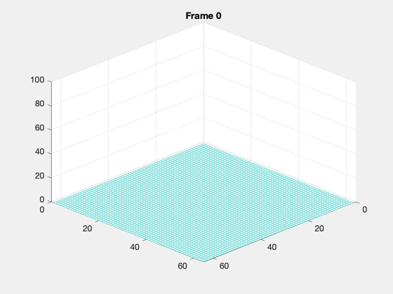
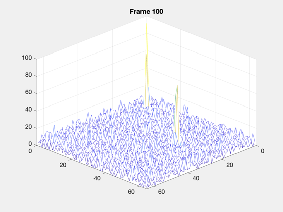

Generate a noisy star image in a loop.
Generates noise from a CCD model and an image from Gaussian based point spread functions. The demo has three centroids. Generates 100 images and saves them to a movie called CCDMovie.avi ------------------------------------------------------------------------- See also DetectorModel, FocalPlaneImage, VM2PSFPeak, ImagerPSF, RHSGaussianPSF, SaveMovie
Contents
%-------------------------------------------------------------------------- % Copyright (c) 2013-2014 Princeton Satellite Systems, Inc. % All Rights Reserved. %--------------------------------------------------------------------------
Constants
%-----------
mmToM = 0.001;
Noise model
%------------- e = DetectorModel( 'struct' ); e.m = 64; e.n = 64; e.a = 25; e.f = 50; e.pixel = 20; e.qE = 0.33; e.tau = 0.2; e.fpn = 115; e.ndr = 75; e.dark = 190; e.alpha = 0.018; e.kTC = 0; e.kAD = 14.8e-6; e.gain = 1; e.bits = 12; e.vS = 2 - 0.85; e.eta = 1; e.kappa = 1; e.r = 1; e.centroid = false; e.lambda = 500;
Initialize the noise and display
%---------------------------------- DetectorModel( 'initialize', e ); FocalPlaneImage( 'initialize', e ); z = get(gca,'zlim'); set(gca,'zlim',[0 100]);
PSF model
%---------- d.n = e.m; d.m = e.n; d.xPixel = e.pixel; d.yPixel = e.pixel; d.rPSF = [[3.5 11.5 26.5]*d.xPixel;[3.5 11.5 44.1]*d.yPixel]; vM = [5 5.2 4.8]; pSFData.r = [0;0]; pSFData.i = 1; pSFData.d.sigma = 10; xLim = [-50,50]; d.iPSF = VM2PSFPeak( vM, @RHSGaussianPSF, e.lambda, e.a, e.tau, pSFData, xLim, xLim ); d.funData.sigma = 10; d.funPSF = @RHSGaussianPSF; % Generate the centroid output %----------------------------- pI = ImagerPSF( d );
Animate
%--------- clear m; for k = 1:100 p = DetectorModel( 'update', e, pI ); FocalPlaneImage( 'update', p, k ); m(k) = getframe(gcf); pause(0.1) end SaveMovie( m, 'CCDMovie' ) %-------------------------------------- % $Id: f66d272bf59d9309ac34042467e776231877ef18 $